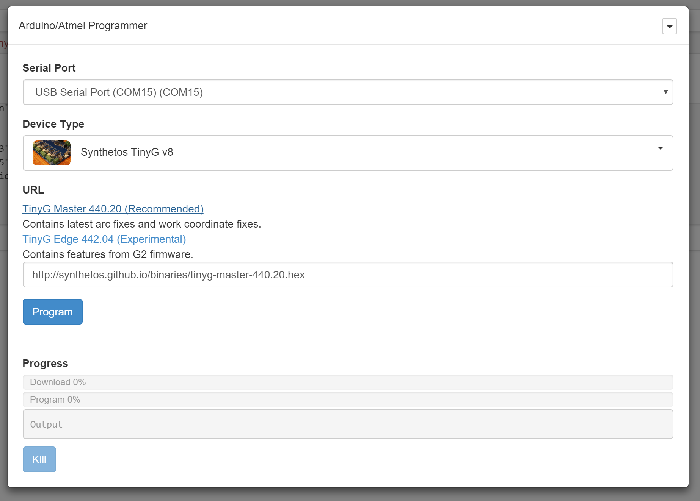

com-chilipeppr-widget-programmer
This widget lets you program your Arduino/Atmel from within ChiliPeppr using SPJS's new programfromurl method. SPJS now comes with avrdude and bossac just like the Arduino IDE. This means SPJS can handle programming your firmware directly from the browser.

ChiliPeppr Widget / Programmer
All ChiliPeppr widgets/elements are defined using cpdefine() which is a method that mimics require.js. Each defined object must have a unique ID so it does not conflict with other ChiliPeppr widgets.
| Item | Value |
|---|---|
| ID | com-chilipeppr-widget-programmer |
| Name | Widget / Programmer |
| Description | This widget lets you program your Arduino/Atmel from within ChiliPeppr using SPJS's new programfromurl method. SPJS now comes with avrdude and bossac just like the Arduino IDE. This means SPJS can handle programming your firmware directly from the browser. |
| chilipeppr.load() URL | http://raw.githubusercontent.com/chilipeppr/widget-programmer/master/auto-generated-widget.html |
| Edit URL | http://ide.c9.io/chilipeppr/widget-programmer |
| Github URL | http://github.com/chilipeppr/widget-programmer |
| Test URL | https://preview.c9users.io/chilipeppr/widget-programmer/widget.html |
Example Code for chilipeppr.load() Statement
You can use the code below as a starting point for instantiating this widget inside a workspace or from another widget. The key is that you need to load your widget inlined into a div so the DOM can parse your HTML, CSS, and Javascript. Then you use cprequire() to find your widget's Javascript and get back the instance of it.
// Inject new div to contain widget or use an existing div with an ID
$("body").append('<' + 'div id="myDivWidgetProgrammer"><' + '/div>');
chilipeppr.load(
"#myDivWidgetProgrammer",
"http://raw.githubusercontent.com/chilipeppr/widget-programmer/master/auto-generated-widget.html",
function() {
// Callback after widget loaded into #myDivWidgetProgrammer
// Now use require.js to get reference to instantiated widget
cprequire(
["inline:com-chilipeppr-widget-programmer"], // the id you gave your widget
function(myObjWidgetProgrammer) {
// Callback that is passed reference to the newly loaded widget
console.log("Widget / Programmer just got loaded.", myObjWidgetProgrammer);
myObjWidgetProgrammer.init();
}
);
}
);
Publish
This widget/element publishes the following signals. These signals are owned by this widget/element and are published to all objects inside the ChiliPeppr environment that listen to them via the chilipeppr.subscribe(signal, callback) method. To better understand how ChiliPeppr's subscribe() method works see amplify.js's documentation at http://amplifyjs.com/api/pubsub/
| Signal | Description |
|---|---|
| (No signals defined in this widget/element) | |
Subscribe
This widget/element subscribes to the following signals. These signals are owned by this widget/element. Other objects inside the ChiliPeppr environment can publish to these signals via the chilipeppr.publish(signal, data) method. To better understand how ChiliPeppr's publish() method works see amplify.js's documentation at http://amplifyjs.com/api/pubsub/
| Signal | Description |
|---|---|
| (No signals defined in this widget/element) | |
Foreign Publish
This widget/element publishes to the following signals that are owned by other objects. To better understand how ChiliPeppr's subscribe() method works see amplify.js's documentation at http://amplifyjs.com/api/pubsub/
| Signal | Description |
|---|---|
| /com-chilipeppr-widget-programmer/com-chilipeppr-widget-serialport/send | We send to the serial port certain commands like the initial configuration commands for the TinyG to be in the correct mode and to get initial statuses like planner buffers and XYZ coords. We also send the Emergency Stop and Resume of ! and ~ |
| /com-chilipeppr-widget-programmer/com-chilipeppr-elem-flashmsg/flashmsg | To flash messages |
Foreign Subscribe
This widget/element publishes to the following signals that are owned by other objects. To better understand how ChiliPeppr's publish() method works see amplify.js's documentation at http://amplifyjs.com/api/pubsub/
| Signal | Description |
|---|---|
| /com-chilipeppr-widget-programmer/com-chilipeppr-widget-serialport/recvline | When we get a dataline from serialport, process it and fire off generic CNC controller signals to the /com-chilipeppr-interface-cnccontroller channel. |
Methods / Properties
The table below shows, in order, the methods and properties inside the widget/element.
| Method / Property | Type | Description |
|---|---|---|
| id | string | "com-chilipeppr-widget-programmer" |
| url | string | "http://raw.githubusercontent.com/chilipeppr/widget-programmer/master/auto-generated-widget.html" |
| fiddleurl | string | "http://ide.c9.io/chilipeppr/widget-programmer" |
| githuburl | string | "http://github.com/chilipeppr/widget-programmer" |
| testurl | string | "http://widget-programmer-chilipeppr.c9users.io/widget.html" |
| name | string | "Widget / Programmer" |
| desc | string | "This widget lets you program your Arduino/Atmel from within ChiliPeppr using SPJS's new programfromurl method. SPJS now comes with avrdude and bossac just like the Arduino IDE. This means SPJS can handle programming your firmware directly from the browser." |
| publish | object | Please see docs above. |
| subscribe | object | Please see docs above. |
| foreignPublish | object | Please see docs above. |
| foreignSubscribe | object | Please see docs above. |
| isInitted | boolean | |
| init | function | function () |
| setupProgramBtn | function | function () |
| onProgram | function | function () |
| downloadDone | boolean | |
| progressDone | boolean | |
| onWsRecv | function | function (msg) |
| onProgramDone | function | function () |
| portSelected | object | |
| isSetupPortListInitted | boolean | |
| setupPortList | function | function () |
| getPortListCallback | function | function (data) |
| onPortListClick | function | function (evt) |
| deviceSelected | object | |
| setupDeviceList | function | function () |
| onClickDeviceType | function | function (evt) |
| onDeviceType | function | function (devicekey) |
| setupUrl | function | function () |
| setUrl | function | function (url) |
| shortcutsClear | function | function () |
| isVersionWarningInitted | boolean | |
| versionWarning | function | function () |
| versionWarningCallback | function | function (spjsVersion) |
| options | object | |
| show | function | function (options) |
| hide | function | function () |
| forkSetup | function | function () |
| devices | object |
About ChiliPeppr
ChiliPeppr is a hardware fiddle, meaning it is a website that lets you easily create a workspace to fiddle with your hardware from software. ChiliPeppr provides a Serial Port JSON Server that you run locally on your computer, or remotely on another computer, to connect to the serial port of your hardware like an Arduino or other microcontroller.
You then create a workspace at ChiliPeppr.com that connects to your hardware by starting from scratch or forking somebody else's workspace that is close to what you are after. Then you write widgets in Javascript that interact with your hardware by forking the base template widget or forking another widget that is similar to what you are trying to build.
ChiliPeppr is massively capable such that the workspaces for TinyG and Grbl CNC controllers have become full-fledged CNC machine management software used by tens of thousands.
ChiliPeppr has inspired many people in the hardware/software world to use the browser and Javascript as the foundation for interacting with hardware. The Arduino team in Italy caught wind of ChiliPeppr and now ChiliPeppr's Serial Port JSON Server is the basis for the Arduino's new web IDE. If the Arduino team is excited about building on top of ChiliPeppr, what will you build on top of it?